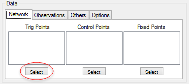
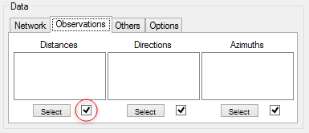
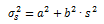
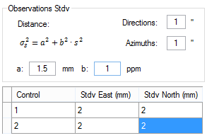
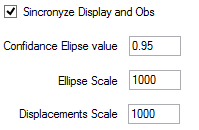
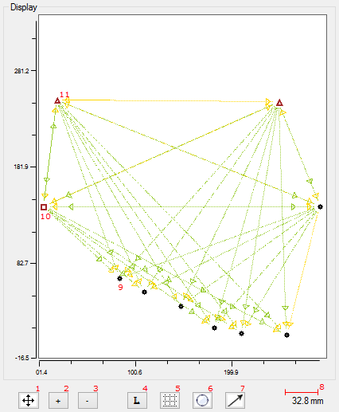

Definição da Rede
A rede, vértices, pontos de controlo e observações a utilizar, é definida na zona "Data" do SolNNet. Na zona de "Display" poder-se-á visualizar interactivamente a definição da rede.Network
Na secção Network definem-se quais os vértices que são pontos trigonométricos, pontos de controlo ou pontos fixos.

O botão Select, selecciona ou desselecciona todos os items da lista.
O botão Select, selecciona ou desselecciona todos os items da lista.
Observations
Na secção Observations definem-se quais as observações: direcções, distâncias e azimutes; que entram no processamento da rede.

A caixa de selecção, individualmente, serve para indicar se o seu tipo de observação aparece desenhado na janela do Display.
A caixa de selecção, individualmente, serve para indicar se o seu tipo de observação aparece desenhado na janela do Display.
Others
A definição do desvio padrão das observações e dos pontos de controlo faz-se na secção Others.Para as distâncias utiliza-se a equação em baixo, em que a é a componente constante de incerteza em milímetros (mm), b é o coeficiente, partes por milhão (ppm), da componente variável distância observada s.

Nas direcções a unidade do valor de desvio padrão é o segundo (") de grau.Nos pontos de controlo a unidade é o milímetro (mm).

Options
- Sincronização instantânea entre a selecção dos pontos e das observações e a janela de Display da rede.
- valor de região de confiança, na escala de 0 a 1, de definição das elipses de confiança.
- escala das elipses 1 : x, onde 1 será a escala do gráfico da rede e x a das elipses.
- escala dos deslocamentos 1 : x, onde 1 será a escala do gráfico da rede e x a dos deslocamentos.

Display
Janela de visualização da arquitectura da rede.|
 |
1. Ajuste da tela à rede (fit screen) |
| 2. Zoom In | |
| 3. Zoom Out | |
| 4. Legenda (nome dos pontos) | |
| 5. Grelha de coordenadas: 0 - Off; 1 - On; 2 - Mais densa |
|
| 6. Elipes: 0 - de erro; 1 - de confiânça; 2 - Off |
|
| 7. Vectores de deslocamentos | |
| 8. Escala das elipses | |
| 9. Ponto Trigonométrico | |
| 10. Ponto Fixo | |
| 11. Ponto de Controlo |